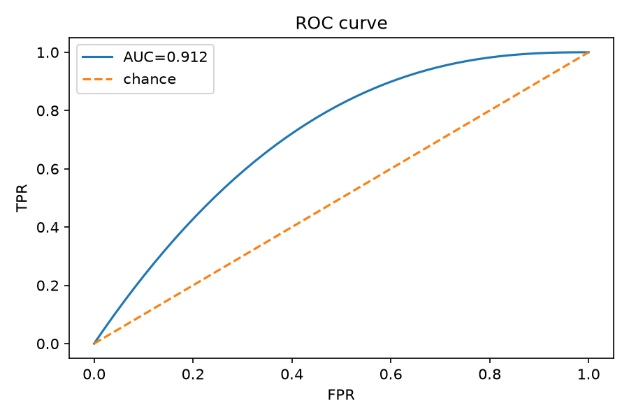

Skip to main content
Forecast ML — Model Evaluation
Loading run metadata…
KPIs
Metrics
Charts
SHAP
Key metrics (global)
Metrics by bucket
Bucket type
Segment
Decile
Filter rows
Sort by
— none —
Sort: asc
Global and per-bucket metrics. Click a column header to sort.
Bucket
Loading…
Charts

ROC: ranking quality. Enable JavaScript for the full gallery.
Classification
Regression
SHAP — top features